3. Amazon CognitoとSpring Securityを利用したOAuth2ログイン¶
塾長の記事AWSで作るマイクロサービスを参考に認証認可の仕組みを実装する。 図はドラフト版の方が見やすい
3.1. Cognitoの設定¶
CognitoはAWSの認証/認可のサービス
ユーザープールとIDプールという２つの大きな機能を提供する
ユーザープール（ユーザー情報データベース）
ユーザー情報やユーザー属性を定義可能
ユーザーの作成やサインイン管理
サードパーティとの連携
MFAの設定が可能
IDプール（認可情報機能を提供する）
認証されたユーザーに対して、Tokenを検証して、一時的な認可情報を付与する
3.1.1. Cognitoのユーザープールの作成¶
以下の項目を設定していく
名前
userpoolの名前属性
ログインIDなど、ログインユーザーの情報に関しての設定ポリシー
パスワードに関するポリシーを設定MFAとアカウント回復
MFAの設定やアカウントの回復方法の設定メッセージのカスタマイズ
ユーザーに発出するメールに関する設定タグ
Cognitoに関するタグの設定デバイス
一度ログイン完了したブラウザ情報を通じてログインを継続する機能アプリクライアント
アプリクライアントの設定を行い、クライアント名ややりとりするトークンの設定、クライアントシークレットに関する設定を行う。トリガー
ユーザープールにおけるイベントを契機として実行するLambdaの設定を行う
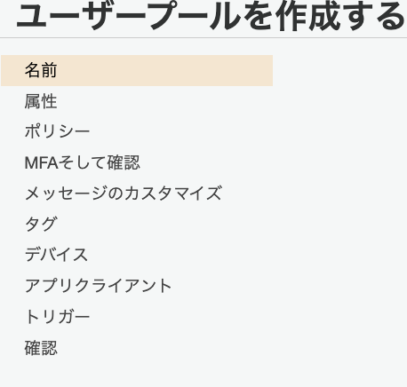
3.1.1.1. 名前の設定¶
userpoolの名前を設定する
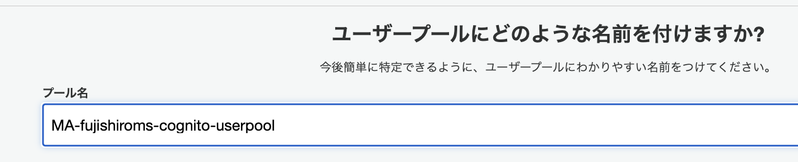
3.1.1.2. 属性¶
ログインユーザーのIDや基本設定を定義する
ユーザー名
サインイン時の識別子IDについて設定
今回は検証した（ユーザーからの応答があった）Eメールを設定Eメール・電話番号
Eメールや電話番号自体をユーザーIDにする場合に設定するオプション大文字小文字の区別
大文字小文字の区別設定で、区別を推奨している標準属性
標準で準備されている、ユーザープールで保持する属性情報（今回は氏名と名前）カスタム属性
開発者がカスタムで設定できる、ユーザープールで保持する属性情報（今回はログインIDと管理者フラグ）
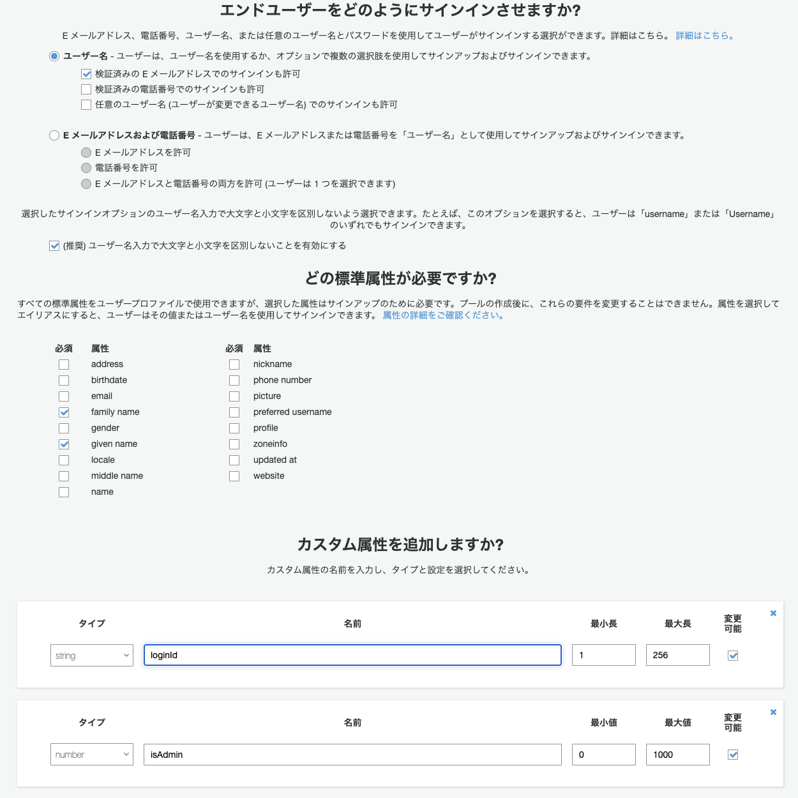
3.1.1.3. ポリシー¶
パスワードに関するポリシーを設定
パスワード強度
文字数などを設定自己サインアップ
管理者だけが、ユーザー登録できるか、一般ユーザーが自分でできるか有効期限
ユーザー作成時の一時パスワードについての有効期限で、これを過ぎるとユーザーの作り直しとなる。
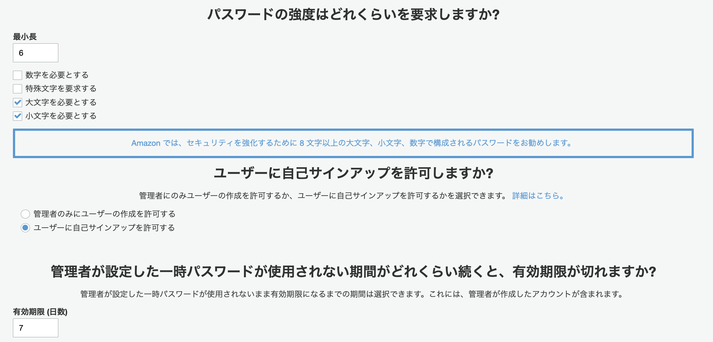
3.1.1.4. MFAとアカウント回復¶
MFAの設定とパスワードを忘れたときなどのアカウントの回復方法を定義する
MFAの有効
Cognitoを利用したサインアップ・サインインについてMFAを利用するかの設定（今回は不要）回復方法
パスワードを忘れたときのリセット方法としてEメールや電話が利用できる確認する属性
サインアップやリセット時に確認する属性情報を設定SMSのロール
MFAや回復にはSMSを利用するので、そのためのロールを作成する（デフォルトでOK）
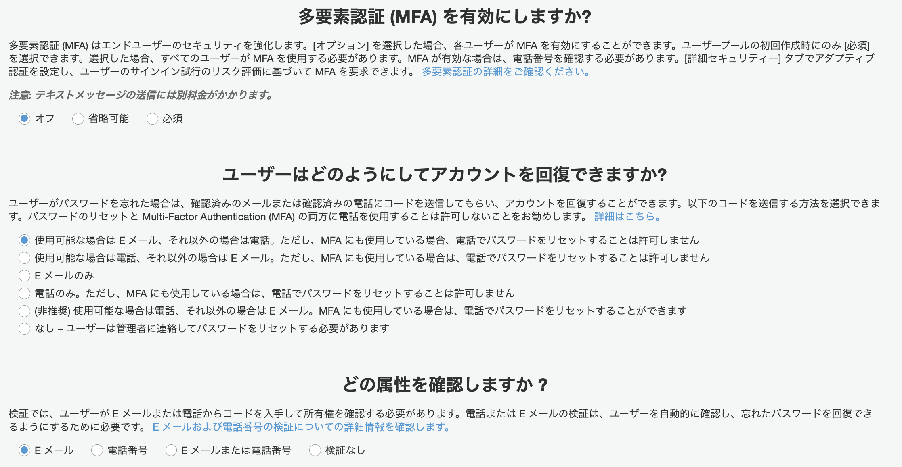
3.1.1.5. メッセージのカスタマイズ¶
Cognitoから発出するメールの設定を行う
Eメールアドレスのカスタマイズ
発信リージョンは限られているが、利用しているリージョンと異なっていても特に問題はない
発信元のメール設定やリプライ先について設定可能SESによるメール発信設定
大規模なユーザーに向けて、サービスを提供する場合はEメール対応のための設定（今回は不要）Eメール検証メッセージ設定
検証メールのカスタマイズユーザー招待メッセージ設定
初回ログイン時の招待メールのメッセージをカスタマイズ
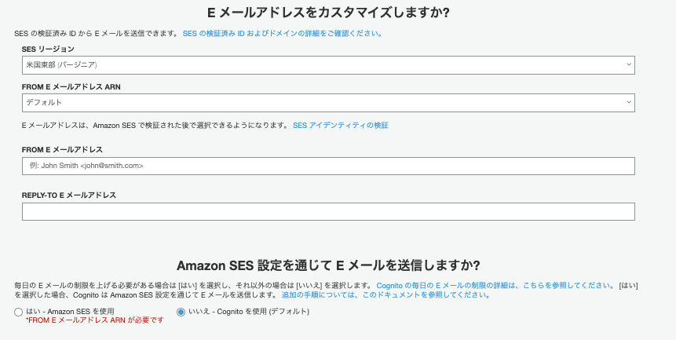
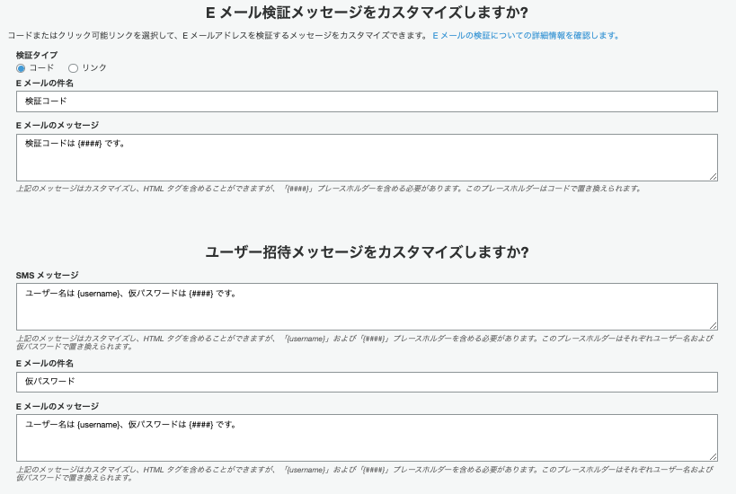
3.1.1.6. タグ¶
Cognitoリソースに対するタグ設定を必要に応じて実施
3.1.1.7. デバイス¶
ブラウザやデバイス情報を記憶して、ログインを保持する、Remembermeサービス設定を必要に応じて設定
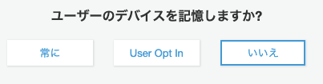
3.1.1.8. アプリクライアント¶
ユーザープールを利用するアプリクライアントの設定や、やりとりするトークンやクライアントシークレットの設定を行う。
アプリクライアント名
Cognitoへアクセスするアプリケーションクライアントの設定（適当なものを設定）トークンの有効期限
リフレッシュトークンの有効期限で、30daysアクセストークンの有効期限
アクセストークン（認可情報）の有効期限で、60minがデフォルトIDトークンの有効期限
IDトークン（認証情報）の有効期限で、60minがデフォルトクライアントシークレットの生成
アプリクライアントの正当性を確認するパスワードのようなもので、サーバーサイド側でやりとりするべき情報
JSやモバイルアプリケーションは脆弱性に直結するので利用しない点に注意認証フローの設定
OAuth2の認証フローではなくて、ユーザーサインアップ時のユーザー認証フローを指しており、以下の5つから設定するALLOW_ADMIN_USER_PASSWORD_AUTH
CLIやSDKを利用して、管理者ユーザーとして認証を処理するALLOW_CUSTOM_AUTH
Lambdaでカスタム認証を行うALLOW_USER_PASSWORD_AUTH
CLIやSDKを利用して、一般ユーザーとして処理を行うオプションALLOW_USER_SRP_AUTH
Saltやチャレンジレスポンスなど、パスワード交換の安全性を高めた方法ALLOW_REFRESH_TOKEN_AUTH(必須)
リフレッシュトークンを利用した、認証
セキュリティ設定
ユーザーが存在しない時のエラーに対応（デフォルトでOK高度なトークン設定
個別にリフレッシュトークンを無効化することが可能になるらしい
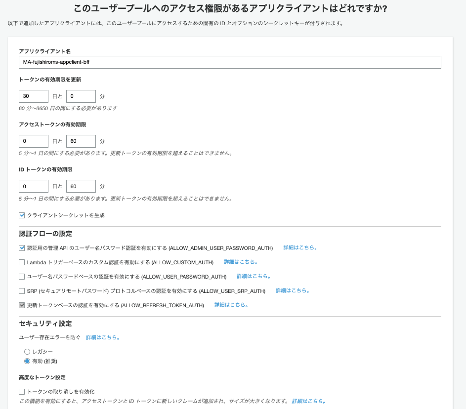
3.1.1.9. トリガー¶
ユーザープールにおけるイベントを契機として実行するLambdaの設定を行う(今回はデフォルト)
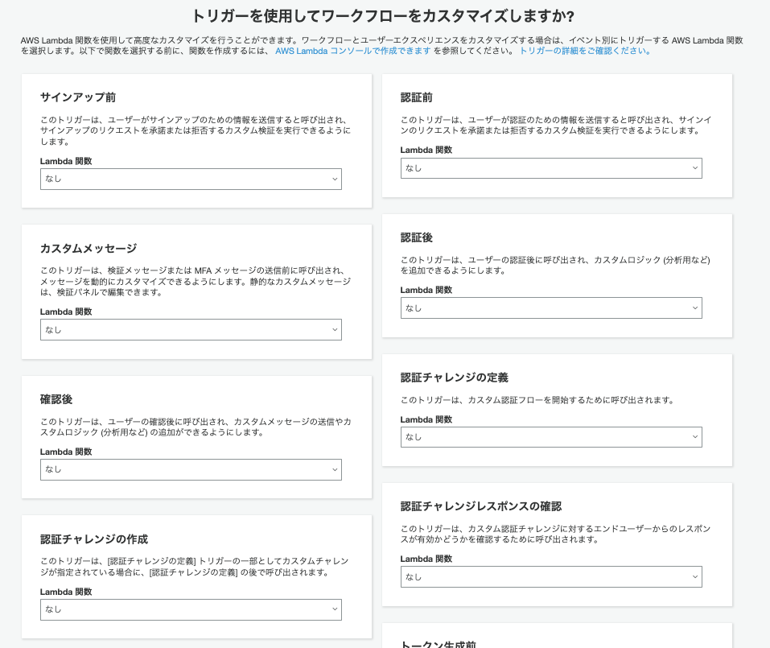
3.1.2. CognitoのIDプールの作成¶
OAuth2Loginに向けて、アプリクライアントの設定とユーザープールで発行したトークンを検証するIDプールを作成する。
3.1.2.1. アプリクライアントの設定¶
Cognitoのユーザープールの画面のナビゲーションペインからアプリクライアントの設定を選択
以下の項目を選択していく
有効なIDプロバイダ
プロバイダとして利用するユーザーディレクトリサインインとサインアウトのURL
コールバックURL
アプリクライアントからリダイレクトされたCognitoで認証が完了した後、アプリクライアントへ再度リダイレクトするURL
Spring Securityでリダイレクトを受け入れるURLはhttps://domain_name/context_path/login/oauth2/code/provice_name
今回はローカルで実行されるアプリケーション向けにhttp://localhost:8080/frontend/login/oauth2/code/cognitoとする。
この設定が、正しく一致しないと動作しないので注意サインアウトURL
サインアウト後にリダイレクトするアプリケーションのクライアントURL
今回はhttp://localhost:8080/frontend
OAuth2.0のフローとスコープ
OAuthの認可フロー
セキュリティ的な安全性が担保されているAuthorization code grantが推奨スコープ
OAuth2.0では、保護されたリソースに対するアクセス制御する方法としてスコープという概念を使用している。
Cognitoが保護されたリソースへのアクセス権を指定する。（認可の指定)
今回は以下を許可するopenid: IDトークン
aws.cognito.signin.user.admin: ユーザープールのAPIオペレーション
profile: ユーザー情報へのプロファイルアクセス
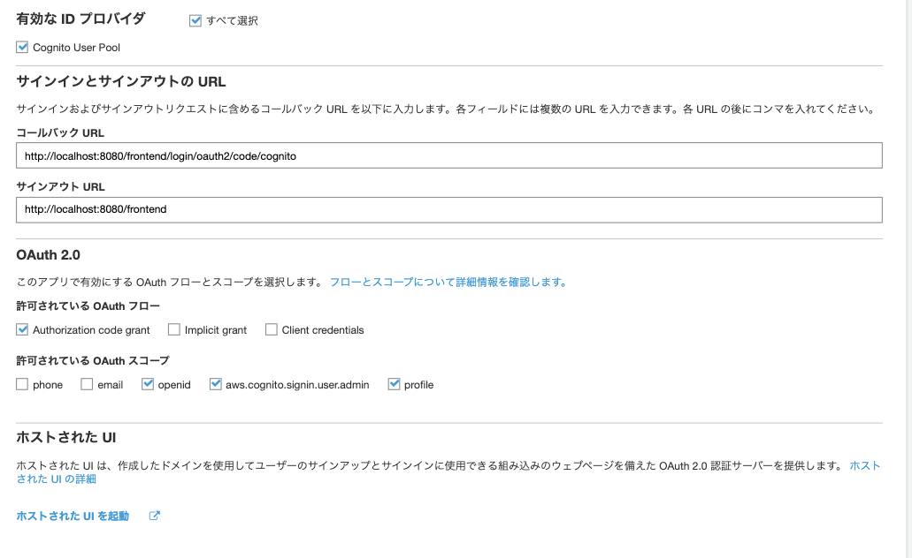
3.1.2.2. ドメインの設定¶
Cognitoのユーザープールの画面のナビゲーションペインからドメイン名を選択して、ドメイン名を設定
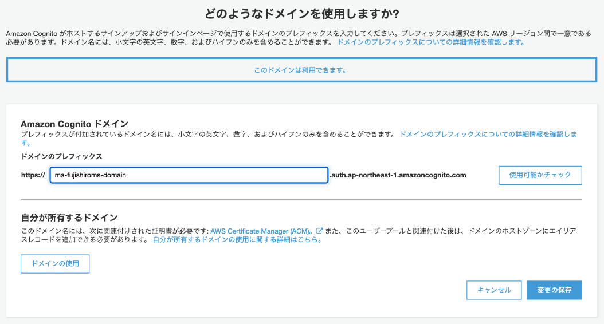
3.1.2.3. IDプールの設定¶
Cognitoのコンソール画面から、IDプールの管理>IDプールを作成を選択
IDプール名
MA-fujishiroms-idpoolユーザープールID
ユーザープールの全般設定にあるアプリクライアントID
ユーザープールのアプリクライアントの設定の一番上にある
3.2. Auth0の設定¶
3.2.1. Auth0にサインアップ¶
3.2.2. テナントの作成¶
リージョンとテナント名を指定して、テナントを作成
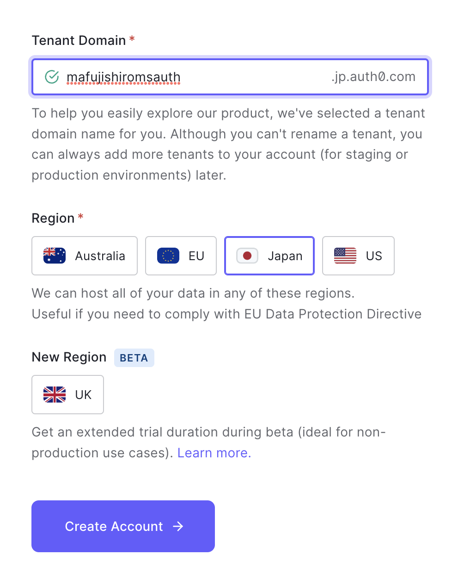
3.2.3. アプリケーションの作成¶
作成したテナントからアプリケーションを選択して、アプリケーションの作成
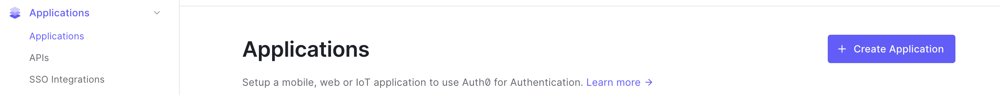
アプリケーションの名前を設定して、SIngle Page Web Applicationを選択してCreate
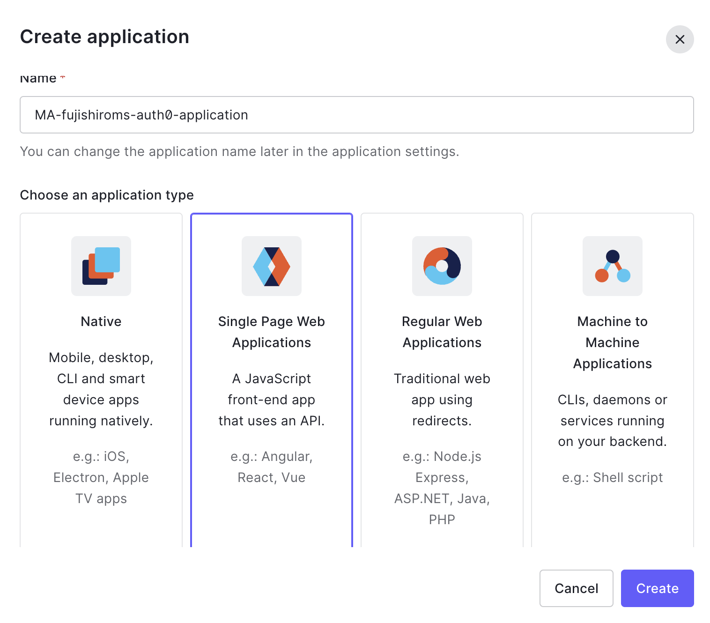
作成した、アプリケーションのSettingから以下の情報を控えておく
Name
Domain
Client ID
Client Secret
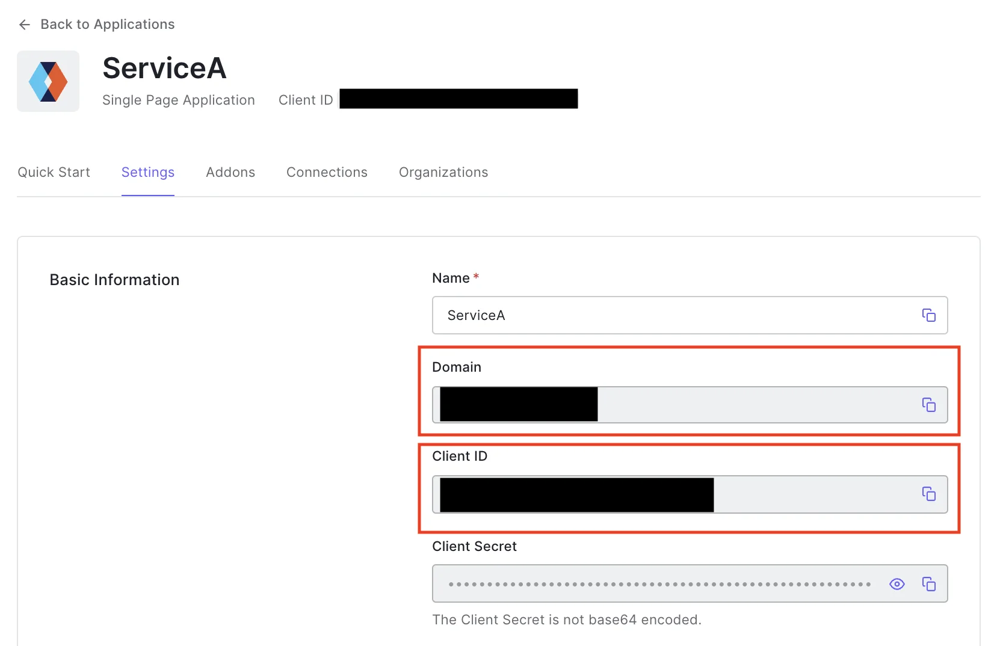
許可されたコールバックURLで以下のドメインを設定しておく（以下の形式に従う必要がある）
https://
.auth. .amazoncognito.com/oauth2/idpresponse
https://ma-fujishiroms-domain.auth. ap-northeast-1.amazoncognito.com/oauth2/idpresponse
3.3. Lambdaの構築¶
Cognitoの初期化処理を自動化するLambda関数を構築
アプリクライアントのクライアントシークレットをSystems Managerに登録する
CognitoのユーザープールにOAuth2Login用のユーザーを作成
OAuth2 Loginユーザーのサインアップステータスを変更する
3.4. Springの設定¶
あんまり難しく考えないで、SpringSecurityを利用して、ログイン画面を作成する
3.4.1. Spring Securityの実装（フロントエンド）¶
3.4.1.1. Spring Securityとは？¶
Spring Frameworkを用いいてWebAppを作成する場合に認証にか処理を簡単に実装できるフレームワーク
セキュリティ対策は難解であるものの、SpringSecurityを利用することで少量のコーディングで多様なセキュリティ対策処理を実装可能
サーブレットフィルタリングによる、リクエスト処理の正当性チェック
不正リクエストのブロック
パスワードのハッシュ化、暗号化
OAuth2を使ったトークン検証など
3.4.1.2. 作成するアプリケーション¶
WebApp
SpringBootAppを実行する起動クラスMvcConfig
SpringMVCの設定クラスSecurityConfig
SpringSecurityの設定クラスSampleController
ログイン画面やログイン後にポータル画面に遷移するよう定義するクラスCustomUserDetails
SpringSecurityでユーザー情報を表すモデルオブジェクトを継承したカスタムクラスCustomeUserDetailServiece
CustomUserDetailsを取得するためのカスタムクラスLoginSuccessHandler
ログインが成功したのちに実行されるハンドラクラスSessionExpiredDetectingLoginUrlAuthenticationEntryPoint
セッションが無効になったことを検出してログイン画面へ遷移するためのハンドラクラス
src/main/java/***/frontend
|
|-- app/web
| |
| |-- SampleController
| |
| |-- security
| |
| |-- CustomUserDetails
| |
| |-- CustomUserDetailsService
| |
| |-- LoginSuccessHandler
| |
| |-- SessionExpiredDetectingLoginUrlAuthenticationEntryPoint
|
|
|-- congig
|
|-- MvcConfig
|
|-- SecurityConfig
|
|-- WebApp
3.4.1.3. 静的ファイルのコピー¶
staticやresources配下のhtmlファイルなどはgithubからコピーしておく
3.4.1.4. SecurityConfig¶
以下の内容など、Secruty関連の内容を指定していく
SpringSecurityの対象外のパス
ログインログアウト処理を行うURIのパス
3.4.1.5. CustomUserDetails¶
送信されたID/Passwordを検証するロジック
SpringSecurityによる、ログイン処理では、リクエストパラメータとして送信されたIDとパスワードを検証するロジックが必要。
このロジックは既に実装されており、org.springframework.security.core.userdetails.UserDetailsを使って実装する。
3.4.1.6. CustomUserDetailsService¶
CustomUserDetailsを実装するためには、org.springframework.security.core.userdetails.UserDetailsServiceのインターフェースを実装しておく必要があるので、実装する。
UserDetailsServiceでは、loadUserByUserNameメソッドを実装し、 UserDetailsインターフェースが実装したクラスを返却する。 このオブジェクトを利用して、SpringSecurtyが検証を行う。
3.4.1.7. トラブルシュート①: SpringSecurityのモジュールインポートエラー¶
pomでSpringbootを指定したところ、以下のモジュールが見つからないエラーが発生した
import org.springframework.security.config.annotation.web.configuration.WebSecurityConfigurerAdapter;
SpringSecurtityでは、5.4〜6.0でセキュリティ設定の書き方が大幅に変わる いので、pomで明示的にバージョンを5.4になるように指定
<properties>
<spring-security.version>5.3.4.RELEASE</spring-security.version>
</properties>
3.4.1.8. トラブルシュート②： javaxのimportエラー¶
SampleControllerでjavaxのimportがエラー
import javax.servlet.http.HttpSession;
pomで依存関係を追加してあげることで解決
<dependency>
<groupId>javax.servlet</groupId>
<artifactId>javax.servlet-api</artifactId>
<version>4.0.0</version>
<scope>provided</scope>
</dependency>
3.4.1.9. トラブルシュート③：循環？¶
***************************
APPLICATION FAILED TO START
***************************
Description:
The dependencies of some of the beans in the application context form a cycle:
┌──->──┐
| securityConfig (field org.springframework.security.crypto.password.PasswordEncoder org.debugroom.mynavi.sample.ecs.backendforfront.config.SecurityConfig.passwordEncoder)
└──<-──┘
Action:
Relying upon circular references is discouraged and they are prohibited by default. Update your application to remove the dependency cycle between beans. As a last resort, it may be possible to break the cycle automatically by setting spring.main.allow-circular-references to true.
PasswordEncoderフィールドに対して、@Autowiredと@Beanの定義をしているせいで循環してしまっているっぽい。
SecurityConfigの@AutoWired部分を削除して、Beanを直接指定するように変更
削除
@Autowired
PasswordEncoder passwordEncoder;
修正
@Override
protected void configure(AuthenticationManagerBuilder auth) throws Exception {
auth
.userDetailsService(userDetailsService())
.passwordEncoder(passwordEncoder());
}
※application.ymlで、重複を許可してしまうやり方もある
spring:
main:
allow-circular-references: true
3.4.1.10. トラブルシュート④：javax.servlet.Filterをcastできない¶
実行すると以下のエラーが発生。
SpringSecurityのフィルターチェーンの構成が正しくできていない原因っぽい。 WebSecurityConfigurationがjavax.servlet.Filterインターフェースをcastできていないっぽい
org.springframework.beans.factory.BeanCreationException: Error creating bean with name 'springSecurityFilterChain' defined in class path resource [org/springframework/security/config/annotation/web/configuration/WebSecurityConfiguration.class]: Failed to instantiate [javax.servlet.Filter]: Factory method 'springSecurityFilterChain' threw exception with message: class org.springframework.security.web.access.ExceptionTranslationFilter cannot be cast to class javax.servlet.Filter (org.springframework.security.web.access.ExceptionTranslationFilter and javax.servlet.Filter are in unnamed module of loader 'app')
//omit
Caused by: org.springframework.beans.BeanInstantiationException: Failed to instantiate [javax.servlet.Filter]: Factory method 'springSecurityFilterChain' threw exception with message: class org.springframework.security.web.access.ExceptionTranslationFilter cannot be cast to class javax.servlet.Filter (org.springframework.security.web.access.ExceptionTranslationFilter and javax.servlet.Filter are in unnamed module of loader 'app')
at org.springframework.beans.factory.support.SimpleInstantiationStrategy.instantiate(SimpleInstantiationStrategy.java:171) ~[spring-beans-6.0.4.jar:6.0.4]
at org.springframework.beans.factory.support.ConstructorResolver.instantiate(ConstructorResolver.java:653) ~[spring-beans-6.0.4.jar:6.0.4]
... 21 common frames omitted
Caused by: java.lang.ClassCastException: class org.springframework.security.web.access.ExceptionTranslationFilter cannot be cast to class javax.servlet.Filter (org.springframework.security.web.access.ExceptionTranslationFilter and javax.servlet.Filter are in unnamed module of loader 'app')
at org.springframework.security.config.annotation.web.builders.FilterComparator.compare(FilterComparator.java:57) ~[spring-security-config-5.3.4.RELEASE.jar:5.3.4.RELEASE]
at java.base/java.util.TimSort.countRunAndMakeAscending(TimSort.java:355) ~[na:na]
参考サイトのpom.xmlでprovideを追加するという対策をしてみたが、変化なし。。。
<dependency>
<groupId>javax.servlet</groupId>
<artifactId>javax.servlet-api</artifactId>
<version>4.0.0-b01</version>
<scope>provided</scope>
</dependency>
参考サイトでは、微妙に違うエラーだが、tomcatのバージョンが10だからとあった。 今回利用しているのもtomcat10だった。
[Apache Tomcat/10.1.5]
tomcatのバージョンを変えてみた。pomでインストール済みのtomcat9を指定
<properties>
<java.version>17</java.version>
<spring-security.version>5.3.4.RELEASE</spring-security.version>
<tomcat.version>9.0.71</tomcat.version>
</properties>
結果、違うエラーが発生したが、改善傾向？
3.4.1.11. トラブルシュート⑤：jakartaがない¶
jakarta/servlet/ServletExceptionとあるので、jakakrtaが利用できていない？
org.springframework.beans.factory.BeanCreationException: Error creating bean with name 'securityConfig' defined in file [/Users/misakifujishiro/java_workspaces/mynavi-sample-aws-ecs-backend-for-front/target/classes/org/debugroom/mynavi/sample/ecs/backendforfront/config/SecurityConfig.class]: Failed to instantiate [org.debugroom.mynavi.sample.ecs.backendforfront.config.SecurityConfig$$SpringCGLIB$$0]: Constructor threw exception
Caused by: org.springframework.beans.BeanInstantiationException: Failed to instantiate [org.debugroom.mynavi.sample.ecs.backendforfront.config.SecurityConfig$$SpringCGLIB$$0]: Constructor threw exception
at org.springframework.beans.BeanUtils.instantiateClass(BeanUtils.java:223) ~[spring-beans-6.0.4.jar:6.0.4]
at org.springframework.beans.factory.support.SimpleInstantiationStrategy.instantiate(SimpleInstantiationStrategy.java:87) ~[spring-beans-6.0.4.jar:6.0.4]
at org.springframework.beans.factory.support.AbstractAutowireCapableBeanFactory.instantiateBean(AbstractAutowireCapableBeanFactory.java:1300) ~[spring-beans-6.0.4.jar:6.0.4]
... 16 common frames omitted
Caused by: java.lang.NoClassDefFoundError: jakarta/servlet/ServletException
pomでjakartaを追加
<dependency>
<groupId>jakarta.servlet</groupId>
<artifactId>jakarta.servlet-api</artifactId>
<version>5.0.0</version>
<scope>provided</scope>
</dependency>
SampleControllerでjakartaをimportする形に変更
import jakarta.servlet.http.HttpSession;
次なるエラーが発生
3.4.1.12. トラブルシュート⑥：クラスが存在しない？¶
***************************
APPLICATION FAILED TO START
***************************
Description:
An attempt was made to call a method that does not exist. The attempt was made from the following location:
org.springframework.boot.web.embedded.tomcat.TomcatServletWebServerFactory.configureContext(TomcatServletWebServerFactory.java:378)
The following method did not exist:
'void org.apache.catalina.Context.addServletContainerInitializer(jakarta.servlet.ServletContainerInitializer, java.util.Set)'
The calling method's class, org.springframework.boot.web.embedded.tomcat.TomcatServletWebServerFactory, was loaded from the following location:
jar:file:/Users/misakifujishiro/.m2/repository/org/springframework/boot/spring-boot/3.0.2/spring-boot-3.0.2.jar!/org/springframework/boot/web/embedded/tomcat/TomcatServletWebServerFactory.class
The called method's class, org.apache.catalina.Context, is available from the following locations:
jar:file:/Users/misakifujishiro/.m2/repository/org/apache/tomcat/embed/tomcat-embed-core/9.0.71/tomcat-embed-core-9.0.71.jar!/org/apache/catalina/Context.class
The called method's class hierarchy was loaded from the following locations:
org.apache.catalina.Context: file:/Users/misakifujishiro/.m2/repository/org/apache/tomcat/embed/tomcat-embed-core/9.0.71/tomcat-embed-core-9.0.71.jar
Action:
Correct the classpath of your application so that it contains compatible versions of the classes org.springframework.boot.web.embedded.tomcat.TomcatServletWebServerFactory and org.apache.catalina.Context
このサイト的には、tomcat9を利用しているのが原因？？ だが、tomcat10に戻すとjavax.servlet.Filterをcastできないエラーに逆戻り・・・
3.5. SpringSecurityとCognitoの連携¶
3.5.1. ユーザープールを利用した認証¶
3.5.2. アクセストークンを利用した認可の設定¶
3.6. CognitoとAuth0の連携¶
以下を参考に設定
Auth0 を Amazon Cognito ユーザープールの OIDC プロバイダーとして設定するにはどうすればよいですか?を参考にする。
Auth0 を Amazon Cognito ユーザープールの OIDC プロバイダーとして設定するにはどうすればよいですか?
3.6.1. CognitoでAuth0をSAML IdPとして設定¶
ユーザープール>IDプロバイダーから、OpenID Connectを選択して以下を設定
プロバイダー名：任意
クライアントID：Auth0で控えたClientID
クライアントシークレット：Auth0で控えたClient Secret
属性のリクエストメソッド:GET
認証のスコープ:openid
発行者URL: Auth0で作成したアプリのドメイン（https://xxxxxxx.auth0.com)
属性マッピング: email=email
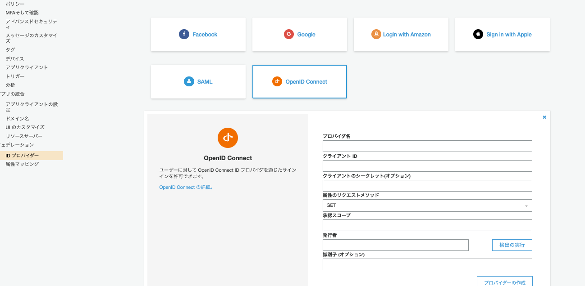
3.6.2. クライアントアプリの設定¶
ユーザープール>クライアントアプリの設定から、OpenIDが選択可能となっている。
## ユーザーの統合？